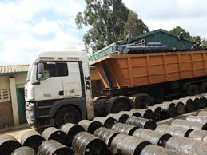
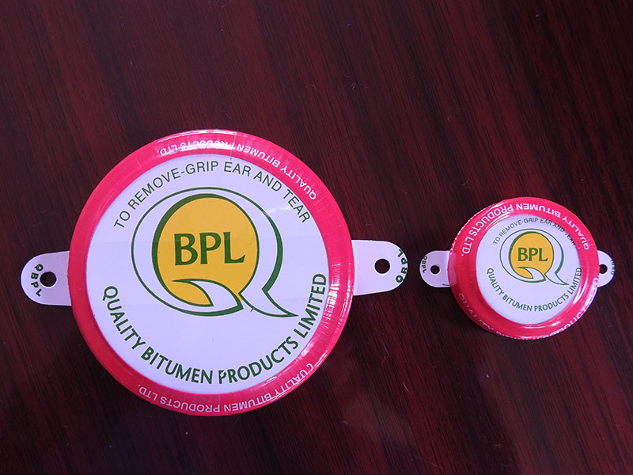

Mon - Fri: 8.00-17.00
Sat: 8.00-13.00
Sun: Closed
We are committed to offering quality products to our customer base.We have trusted partners across the globe in the bitumen sector.Our investment at the bitumen plant offers relevant bitumen and road material testing reliability.Our quality is certified and approved by KEBS.We manufacture under the diamond mark of quality.
We have a functional production laboratory that is run by experienced,seasoned and well-trained technicians.
We supplement our committment to quality by randomly testing our batches at the material testing laboratory run by the Ministry of Transport, Infrastructure, Housing, Urban Development, and Public Works.
Out of experience, we are able to offer first-class quality bitumen products that have continually helped our clients to meet the expected level of standard in their projects.
We build capacity by offering jobs to a team of staff who work in various departments in the plant.This team of experts has ensured that we continue to offer quality products to our clients.
QBPL has capacity both inhouse and with selected providers for product distribution using bitutainers, reconditioned steel drums, IBC tanks and pails.
We seal all our filled drums with special tamper proof seals to ensure that the integrity of our product in transit and in customer warehouses is never compromised.
